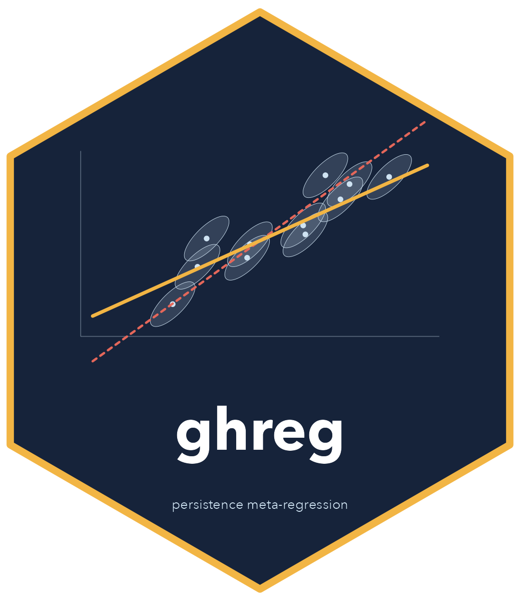

Sensitivity of conditional persistence to the sampling correlation
Source:R/sensitivity.R
gh_sensitivity.RdRefits gh_reg() over a grid of sampling correlations rho, the approach
recommended by Gilbert and Himmelsbach (2026) when the correlation of the
outcome across time is unknown. The Stan model is compiled once and reused.
Usage
gh_sensitivity(
...,
rho = seq(0, 0.9, by = 0.1),
parameters = "beta",
ci.level = 0.95
)Arguments
- ...
Arguments to
gh_reg(), other thanrho.- rho
Values of the sampling correlation to try. Each value is applied to every pair of effect sizes.
- parameters
Parameters to report: any of
"beta","alpha","mu","tau1","tau2", and, for the three-level model,"sd_u1"and"sd_u2". Every fit estimates all parameters; this only chooses which rows are kept. Unknown names are an error.- ci.level
Probability mass of the credible intervals.
Value
A tibble of class gh_sensitivity, with one row per value of rho
and parameter. The columns are rho, the columns of
summary(fit) (see summary.gh_reg()), and the number of
divergent transitions. Plot it with plot.gh_sensitivity().
Examples
# \donttest{
sens <- gh_sensitivity(persist_sim, es1, se1, es2, se2, study = study,
rho = seq(0, 0.9, by = 0.3), chains = 2)
#> Compiling the Stan model (once per machine; about a minute)...
#> Error in rstan::stan_model(model_code = code, model_name = "gh_reg"): Boost not found; call install.packages('BH')
sens
#> Error: object 'sens' not found
plot(sens)
#> Error: object 'sens' not found
# }